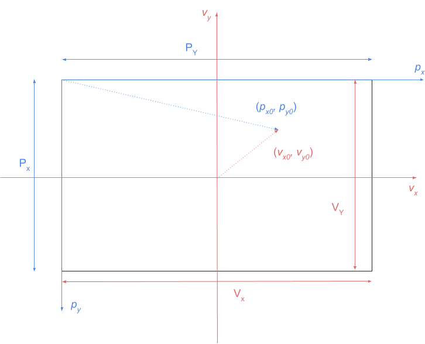

Strange Space Part 1: Creating a basic 3D Graphics Engine
So I've recently been working on a project tentatively named "strange space". The idea is basically this: it's kind of a game, but there's not really any actual objective. You basically fly around through space as if you're in a spacecraft and explore a class of mathematical patterns called strange attractors . It's pretty cool to look and very trippy, especially if you happen to have smoked something funky. It's probably easier to just show you, so to give you a basic idea of what I mean here's a small demo.
To produce this I used Python, with numpy and pygame and a little dash of matplotlib . The aim of the project is to be able to:
- Plot lines and spheres in a 3-dimensional space.
- Have those objects update their position and color in time.
- Be able to navigate and rotate through that 3D space as if in a spacecraft
The scope of the project, at least at first, is limited in the following ways:
- No advanced lighting techniques such as ray tracing or ray marching.
- It should be able to run on a CPU without GPU acceleration.
- No fancy packages - minimalist install procedure only.
This is the first of two blog posts. Here, I explain what the crazy pattern you can see is, and how to set up all the maths to start building a basic 3D engine. In the second post, I will go through the code to make it happen!
1. The crazy pattern
1.1 Lorenz Attractors
Probably the first thing you're thinking is, what is that strange crazy pattern of flying coloured circles? It's called the Lorenz attractor, or Lorenz system. This is the solution to a system of ordinary differential equations that exhibits chaotic behaviour, that is, a small change in the initial configuration causes an increasingly magnified difference in outcomes as time progresses.
Click and drag the image above to explore the shape of this solution!
The differential equations governing the dynamics are
for some constants \(\sigma, \rho\) and \(\beta\) which Lorenz originally set to 10, 8/3 and 28 respectively. We can approximate the solution using the Euler method, leading to a simple update pattern:
with some initial points \((x_0, y_0, z_0)\) . The pattern is then produced by plotting the last 1000 points in 3D space.
1.2 Strange Attractors
The Lorenz attractor is actually just one of a class of similar objects. Another example is the Roessler attractor. This has a system of ODEs given by
and can be solved in the exact same way. A good set of examples can be found here .
In general, many different systems of ODEs may exhibit this kind of behaviour. Pretty cool right!
2. Coordinate Transformations
Once we have some way of calculating the 3D coordinates as a function of time, we need to start thinking about how to manipulate them so we can do some cool stuff.
The first thing to consider is rotations of these points.
2.1 Rotation matrices
Consider a point moving on some trajectory defined by \(x'(t), y'(t), z'(t)\) . At any given time we could could rotate this vector around the \(x\) -axis by an angle \(\theta\) by pre-multiplying the vector by the \(x\) -rotation matrix.
To see which direction this matrix rotates the vector, we can use the right hand rule.
This can equivalently be thought of as rotating the coordinate system itself , leaving the vector fixed, but in the opposite direction.
Similarly, we can rotate any vector about the \(y\) or \(z\) axes using the matrices
Thus, sequentially rotating the point around the \(x, y\) and \(z\) -axes by respective angles \(\theta_x, \theta_y\) and \(\theta_z\) transforms the point \((x, y, z)\) to
2.2 Rotate, translate, translate, rotate
We can create a new coordinate system by first performing a rotation of the axes, and then translating the axes by some fixed offset \((s_x, s_y, s_z)\) .
We now have a system of coordinates for an object centred at a point \((s_x, s_y, s_z)\) , on an axis that has been rotated by \((\theta_x, \theta_y, \theta_z)\) , in the reference frame of an observer located at the origin.
However, this observer may change location over time as \((l_x, l_y, l_z)\) . From an observer with this frame of reference, the object appears to have coordinates
Finally, the observer themselves may rotate their axes by some angles \((\phi_x, \phi_y, \phi_z)\) . This is equivalent to tilting in different directions as if you were in a plane.
In this tilted frame of reference, the points appear to have coordinates
3. Plotting points on a screen
3.1 Transforming onto the viewing plane
Once we have calculated the relevant coordinate point \((x_0, y_0, z_0)\) in 3D space, we need to project it onto the viewing plane. To do this, we can use the pinhole camera model . Here, the image that we see is what you would get if you used an old-fashioned camera with an infinitely small aperture.
​
The vector equation of the line passing through the origin to a point \((x_0, y_0, z_0)\) is simply
This intersects the viewing plane when the \(z\) -component is \(-d\) .
Plugging this back into the vector equation for the line gives the coordinates projected onto the viewing plane.
However, this image will be rotated by \(180^\circ\) with respect to the original. To correct for this, we can just remove the negative sign.
Another way of thinking about this is that \((v_x, v_y)\) represents the point where the same line intersects a virtual viewing plane, located at \(z=d\) .
Under this model, we always reject points for which \(z_0 \leq 0\) .
3.2 Converting to a pixel position
Once we have a position in the viewing plane, we need to convert it to a pixel value.

The only thing to bear in mind here is that pixel coordinates generally have the origin at the top left hand side, whereas the \(v_x, v_y\) plane has its origin at the centre.
If we assume that the screen resolution is \((P_X, P_Y)\) , and that the coordinate plane extends from \(v_x \in [-V_X / 2, V_X / 2]\) and \(v_y \in [-V_Y / 2, V_Y / 2]\) , then we can convert a point \((v_x, v_y)\) to a pixel point \((p_x, p_y)\) by
3.3 Handling the object size
In our world, points are represented by spheres with a fixed radius \(r\) . This means that, whichever way you are looking at them, they will always appear as a circle (we are ignoring any lighting effects), but the apparent radius, \(r_{\text{ap}}\) , of this circle will change based on how close the object is. This follows a simple inverse law.
When the position of the object is \((0, 0, d)\) , the apparent radius will be \(r\) . From this we can see that
That's all for this first blog post! Check back soon for part 2 where I will show you how to code up all this to actually produce the game.